lord of the forest
Sylvie is the vessel of the God of Trees—a Dendro elemental lifeform adopted as a god by the people of Sumeru—that went by the name of Foras. Disillusioned with the aspect of godhood upon their revival from a death suffered during the Archon War, they have integrated into human life and have been travelling all over Teyvat for the last 1,500 years.
Many would call them loud in different ways—in voice, energy, and their personality in general; one would not think they were anything but an adventurer that was way, way too enthusiastic and reckless for their own good. The years Sylvie has been alive have put them through a number of events and situations that have shaped their view of their world.


lord of the forest
Sylvie is the vessel of the God of Trees—a Dendro elemental lifeform adopted as a god by the people of Sumeru—that went by the name of Foras. Disillusioned with the aspect of godhood upon their revival from a death suffered during the Archon War, they have integrated into human life and have been travelling all over Teyvat for the last 1,500 years.
Many would call them loud in different ways—in voice, energy, and their personality in general; one would not think they were anything but an adventurer that was way, way too enthusiastic and reckless for their own good. The years Sylvie has been alive have put them through a number of events and situations that have shaped their view of their world.

Character
Likes
- eating/trying new foods
- fashion/clothing
- doing dumb shit
- fun competitions
- new adventures
Dislikes
- cold sensations
- tangled hair
- wet sensations
- being called old
- being ignored
Details
- it is rare for sylvie to discuss much with others when it comes to their own insecurity; after years of being a god-like figure, it's been integrated into their brain that 'gods' do not show weakness. only zhongli and a few others have seen their more vulnerable side.
- terribly competitive with the right people or circumstances; do not play TCG against them, they are someone who is not shameless to make absolutely disgusting decks to fight against.
- sylvie, although acting foolish and silly, is quick-witted and able to analyze situations easily; this simple, welcoming personality is not a ruse as they are truthful with it, but it does help to disarm people.
- ... sometimes they truly are stupid though and do say some dumb, unfiltered stuff.
Story

Intro: Pre-war (3500+ years before present)
- Foras is the name of a primordial elemental being born from an irminsul branch that was planted in Sumeru's forests.
- That tree was worshipped in old Sumeru for many generations before their birth and well before the archon wars began spreading out; upon Sylvie's 'birth' from it, they were eventually adopted as their guardian to a large cluster of villages.
- Their feral form is their natural-born form, reaching 13 feet in height and 26 in length, though when born they were the size of a newborn fawn.
- Although seen as the god of trees due to how they came into the world, their power extends to the surrounding flora; with their powers, they could create strips of land with fertile soil that would be used to grow crops outside the wetness of the surrounding forest. They were often asked for blessings for harvests to be bountiful, or for natural medicines to work on ailments and improving health.
- Their main source of trade back then was focused on highly used crops (barley, etc), foraged items, wood, selling of medicinal herbs and spices, and fabric exchange (in either crafted outfits or raw materials), as it was their primary 'currency' ... and mora hadn't come to exist back then as a universal currency.
- During the dry season when harvests were quieter, they went into 'hibernation', though thhis was mostly a guise to travel outside Sumeru and explore the world that was abundant with different gods. It was during this time they met other gods and beings such as Morax, Azhdaha, Marchosius, Osial, Guizhong, Havria, and more.
During the Archon Wars (2500 years — 1500 years before present)
- They were present for the beginning of the archon wars when it began to bleed over the continent of Sumeru, but in an attempt to get help from Andrius to shelter the people under their protection, they found themselves in the snow-covered Mondstadt after an attempt to contact Morax went unanswered.
- Unfortunately, before having a chance to get to Andrius, the interruption of another god resulted in them having taken a fatal hit that nearly bisected them, injured from having killed the other god violently.
- In the short moments before losing consciousness, they buried themselves underground using the roots of the hiberating trees, cocooning themselves underneath the spot where the Windrise tree would soon come to form through Vanessa.
- This injury caused them to essentially die, but this is when their regeneration kicked in for the very first time; due to that, the time it took for them to revive and recover lasted around 1000 years, waking up 500 years after the archon wars were over (so 1.5k years before the present time).
- Due to them being "dead" they emitted no elemental energy and remained practically invisible over their recovery.
- The general belief was that they had died due to the war after abandoning the people they protected; the grand tree they were born from withered alongside them.
Post-war (1500 — 500 years before present)
- After waking up, they ended up chasing down Rex Lapis to find out more information about the current timeline, him being closest god to where they woke up and one of the ones they knew from back then. Foras ended up interrupting a Rite of Descension on purpose to get his attention.
- They went through different stages of grief and guilt at finding out so many gods were killed or chased off due to being seen as "evil" for not agreeing with the new rule, hearing the belief that they had abandoned their people, seeing that none of their history remined ... this feeling of helplessness and anger eventually made them denounce their own godhood and want to just live as someone else; they had no more identity left after their own death.
- After learning of the circumstances of the world, they decided to turn to traveling to learn about the new world and how to be human and to forge a new identity, finding a desire to want to integrate among them and learn more about living. This is where they took on the name Sylvatica, which was eventually simplified to Sylvie.
- During this time, they began to befriend Barbatos as well when the chance was provided, as well as relearning their friendship with Rex Lapis due to the vast difference of the one they knew, and the one that existed now.
- With the other archons, those who did not react with hostility, were ones they attempted to befriend as well to at least maintain a connection to other gods.
- For the most part their time was busy with exploring and learning the new world that existed now, living among humans and learning their habits.
Disappearance (500 years before present)
- The fall of Khaenri'ah though caused a large rift between them and whichever of the seven they had befriended across the years. The pure anger they felt towards Celestia drove them to disappear for the next 500 years off of Teyvat and into the Dark Sea.

Present
- They only resurfaced at the notion of Rex Lapis's death a week after the situation, finding their way back to Liyue out of worry and disbelief of the incident occuring (with massive relief and anger to figure out it was just a staging).
- For the time, they are mostly observing and back to wandering around the nations and doing commissions on the side. They found interest in the new developments and the traveller's goal to find their sibling; the drive to push and topple the system put in by Celestia also rests at the back of their mind.
- During the lock-down of Inazuma, they have snuck to the island, covertly aiding the resistance in their actions against baal either through supply sabotage, damaging important structures, or offering herbs and plants that either aid in healing the members or hinder the Shogun's army.
- With the restoration of Inazuma's peace (tentatively), they have returned back to Liyue in preparations to make their way to Sumeru and see what is happening in the lands they once called home.
- With their arrival to Sumeru and with meeting the traveller on the road, they get tied up in the dream loop that the city of Sumeru has fallen under, quietly working alongside Kusanali and the traveller to unveil the dream-like mystery that haunts the city.
- Something haunts their thoughts; the changes to Irminsul done by Rukkahdevata and Wanderer are ones that they feel, though they do not know why the sensation is present or what has changed. To some degree, it drives them up the wall until they have to come to terms that their memories have been altered.
- An injury sustained in the Chasm led them to be poisoned with the abyss as they killed one being threatening to spill out of the Chasm and into Liyue, leaving them bedridden for a month as the poison was purged slowly out of their system.
- Their visit to Fontaine finds them with a deep kinship and protectiveness over Furina, especially after the circumtances of her trial; Sylvie is present during it, and seeing the trial and how people react to her not being a true 'god' leads them to a deep, despairing pit as it is reminiscent of their own fears. The ongoing prophecized flood occupies their mind as they join the efforts to help.
- ... and like Fontaine, Sylvie finds themselves participating in the war ongoing in Natlan, though wary as the Abyss permeates and oozes everywhere; their wound from the Chasm aches oh so deeply still, even if has been removed from their body. Seeing people who died rising up once more ... something sits weirdly in them at the sight, but it is not their place to argue with those coming back (even if they know all too well the trauma that comes with dying and coming back).
Moodboard
Design

Design sheet, still needs to be updated for their pronouns + flags
- They tend to default to a simple outfit: low-cut frilly shirt, waist-high black pants, and thigh-high brown boots.
- Sylvie enjoys trying on various clothing in general, and finds appeal in more revealing clothing.
- Dresses and make-up are not off the table, and they actively enjoy wearing both.
Design Notes
- Their eyebrows are green, I just tend to default to drawing them black; artists can do either or!
- Their shirt opening can be simplified to not have any strings.
- Their pupils act like a cat's, being able to dilate or turn into slits; by default I tend to draw them slitted.
- They have sharp, canine-like teeth.
- Their vision is not a necessity to draw if need be.
- The fern they wear is only on the left side of their head.
- Major pectoralis is the body reference they're based off.
- Their full design sheet is here on Toyhouse, including additional design notes + 3D turnarounds.
Genshin Kit
Sylvie's kit falls under a very standard 5-star Dendro claymore DPS, centric around being the main damage dealer and active on-field character; their kit can lean into being a full ATK based build, an EM build, or something of a hybrid between the two of them. They can self heal and can inflict a semi-consistent Dendro application to enemies, though the bulk of their damage comes from their burst (like Arataki Itto).
They do benefit from having a team that has a variety of elements, but they can also work in a 3 dendro party with an elemental driver. Full mono teams are not recommended.
View Skills
Brutal Strike
Normal Attack
Normal Attack
Performs up to 4 consecutive strikes.
Charged Attack
Drains Stamina over time to perform
continuous slashes. At the end of the sequence, perform a more powerful slash.
Plunging Attack
Plunges from mid-air to strike the ground,
damaging opponents along the path and dealing AoE DMG upon impact.
Gameplay Notes
- After using Overgrowth, Sylvie's Normal, Charged, and Plunging Attack DMG will be converted to Dendro DMG for 12 seconds.
Constellation Effects
- Constellation Level 4, Honeypot: "When Sylvie takes DMG, their ATK increases by 10% and their EM increases by 50. Lasts for 10s. This effect can stack up to 3 times and can only occur once every 2.5s."
Cicutoxin
Elemental Skill
Plant a Cicucin Sprout in the ground, creating an AOE field which deals continuous Dendro DMG.
Only one Cicucin Sprout created by Sylvie can exist at any one time.
Hold to designate the location of the skill.
Gameplay Notes
- The Cicucin Sprout deals damage to an enemy every 2.5s, this timer is counted separately for each enemy within the field.
- If the enemy leaves the field at any point, the timer is reset and must count down from 2.5s.
- The Cicucin Sprout does not generate an elemental particle upon being placed on the ground, instead it generates 0.5 Elemental Particles every 1.5s if a hit is triggered on an enemy.
Constellation Effects
- Constellation Level 1, Branching Roots: Increases this talent's level by 3 and raises its maximum level to 15.
- Constellation Level 6, Primal Verdure: "When within the damage field of Cicutoxin, all of Sylvie's attacks deal +70% Crit DMG. EM is doubled within the field for all party members."
Overgrowth
Elemental Burst
This state has the following special properties:
- Converts Sylvie's Normal, Charged, and Plunging Attacks to Dendro DMG. This cannot be overridden.
- Increases Sylvie's Normal Attack SPD.
- Increases Sylvie’s resistance to interruption.
- Decreases Sylvie's Elemental and Physical RES by 25%. Only Dendro RES is not lowered.
Overgrowth state will be cleared when Sylvie leaves the field.
Gameplay Notes
- Overgrowth's ATK Bonus will snapshot Sylvie's stats on cast and will not be affected by changes in Sylvie's stats that occur afterwards.
Constellation Effects
- Constellation Level 2, Dendritic Overdrive: "After using Overgrowth, when the party contains characters of 1/2/3 different Elemental Types it will decrease that skill's CD by 1.5s for each elemental type. For each Dendro character in the party, restore 10 Energy to Sylvie. CD can be decreased by up to 4.5s in this manner. Max 40 Energy can be restored in this manner."
- Constellation Level 5, Verdent Flourish: Increases this talent's level by 3 and raises its maximum level to 15.
Stubborn and Bullheaded
1st Ascension Passive
Every 2.5s, Sylvie restores 3% of their own Max HP. During combat, this is reduced to 1% of their Max HP.
Gameplay Notes
- Combat is counted as any time when the player is being targeted by an enemy; attacking without an enemy will not trigger a combat state.
- This occurs when Sylvie is off-field as well, falling under the same conditions: if in combat, the regeneration amount will only be at 1% of their Max HP.
Infusion
2nd Ascension Passive
Each point of Sylvie's Elemental Mastery will increase the damage dealt by Cicutoxin and Overgrowth by 0.08%.
The maximum DMG increase this way for both these abilities is 80%.
Gameplay Notes
- Combat is counted as any time when the player is being targeted by an enemy; attacking without an enemy will not trigger a combat state.
- This occurs when Sylvie is off-field as well, falling under the same conditions: if in combat, the regeneration amount will only be at 1% of their Max HP.

A Friend of the Forest
Utility Passive
When gathering plant-based materials or wood with any party member while Sylvie is on the team, they have a 30% chance to get an additional material.
Gameplay Notes
- Sylvie must be in the active party for A Friend of the Forest to take effect, but does not need to be alive.
- The talent can proc multiple times on the same tree.
- Berries, mushrooms, flowers, and trees are all affected by this passive. Fungi enemy drops are not.
- Extra wood obtained in this way does not count towards the limit of 2000 of a particular type of wood per day.
- It can also apply to stacks of wood obtained by using "The Boon of the Elder Tree" and to harvested items using Nahida's On All Things Meditated passive.
View Constellations
Enemies within the damage field of Cicutoxin will have their Dendro RES decreased by 20%.
After using Overgrowth, when the party contains characters of 1/2/3 different Elemental Types it will decrease that skill's CD by 1.5s for each elemental type.
For each Dendro character in the party, restore 10 Energy to Sylvie.
CD can be decreased by up to 4.5s in this manner. Max 40 Energy can be restored in this manner.
Gameplay Notes
- Sylvie counts as a Dendro character themselves, so inherently there will always be 10 energy returned and effectively making their burst cost 70 Energy.
Increases the Level of Cicutoxin by 3.
Maximum upgrade level is 15.
Honeypot
C4
When Sylvie takes DMG, their ATK increases by 10% and their EM increases by 50. Lasts for 10s.
This effect can stack up to 3 times and can only occur once every 2.5s.
Gameplay Notes
- When Sylvie takes damage while having a shield, the effects of this constellation will still activate.
- Getting hit refreshes the duration if not in cooldown.
Increases the Level of Overgrowth by 3.
Maximum upgrade level is 15.

When within the damage field of Cicutoxin, all of Sylvie's attacks deal +70% Crit DMG. EM is doubled within the field for all party members.
Gameplay Notes
- The EM doubling effect occurs last when doing calculations, and refreshes every 2.5s.
Artifacts, Weapons, Teams
Recommended Artifacts

Gilded Dreams
Deepwood Memories

Flower of Paradise Lost

Marechaussee Hunter
Recommended Weapons
Mailed Flower
⭐⭐⭐⭐

Makhaira Aquamarine
⭐⭐⭐⭐
Rainslasher
⭐⭐⭐⭐

Wolf's Gravestone
⭐⭐⭐⭐⭐
Beacon of the Reed Sea
⭐⭐⭐⭐⭐
Recommended Teams
Their team comps are relatively flexible as long as they're centric on Dendro reactions.


Trivia
- Sylvie was made on March 14, 2021.
- Sylvie cannot handle spice to save their life, despite a deep love of spicy food in general; they faked their spicy intolerance so hard it became real.
- Their ears are quite sensitive to touch, it may cause them to protectively cover their ears if anyone touches them or breathes close to them.
- They can eat everything for the most part because their body can digest practically anything (minus anything originating from the void/abyss realm). even so, they are a massive foodie and prefer actual food.
- They tend to view grooming (brushing one's hair, etc) as a bonding, affectionate activity, so friends may find Sylvie working on their hair to fix it (or licking it if they're in their deer form).
- Sylvie has no true human body; they have no organs inside of them and they fake their blood being 'red', in reality, they are just a human bag wrapped around pure dendro essence (thus their true 'blood' is green).
Relationships


 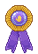
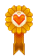
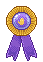
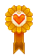
 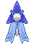
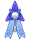


 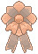
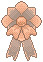


 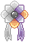
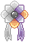
 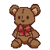
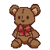


{kind=link}
{kind=link}
{kind=link}